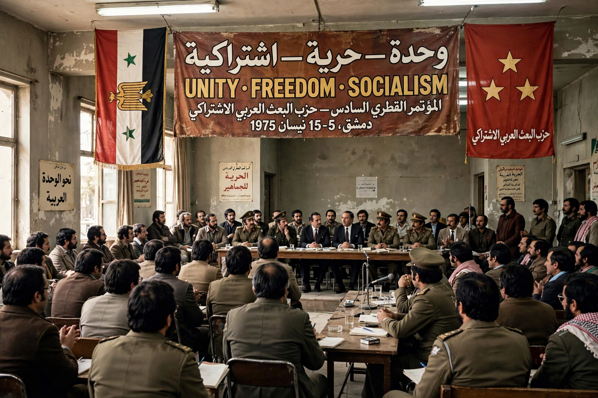

Ba'ath Party
From Wikipedia, the free encyclopedia

The Arab Socialist Ba'ath Party ('Ba'ath' means resurrection/renaissance) was an Arab nationalist political party founded in Damascus in 1947 by Michel Aflaq and Salah al-Din al-Bitar, preaching the unity and freedom of a single Arab nation under socialism — its slogan 'Unity, Freedom, Socialism'. It seized power in Iraq (1963, and again 1968–2003 under the branch that produced Saddam Hussein) and in Syria (1963–2024 under the Assad family), the two branches becoming bitter rivals after the 1966 split. The Syrian regime's fall in December 2024 ended Ba'athist rule in both countries.
Doctrine and rise
Ba'athism fused pan-Arab nationalism with vaguely Marxist socialism, secularism and anti-imperialism, attracting minorities (Alawites in Syria, Sunni Arabs in Iraq's Tikriti network) through its promise to transcend sect and tribe. In power, both branches built one-party security states — Syria's under Hafez al-Assad from 1970, Iraq's under Saddam from 1979 — with mass organisations, Ba'athist curricula and cults of the leader, while fighting each other for the movement's mantle.
Collapse
Iraq's party was dissolved by the US occupation's de-Ba'athification order (2003), whose sweeping purge seeded the insurgency and remains a case study in state dismantling. In Syria, the party fronted the Assad regime through the civil war until rebels took Damascus on 8 December 2024 and Bashar al-Assad fled to Moscow; the party suspended its activities days later, closing a 77-year chapter in Arab politics.